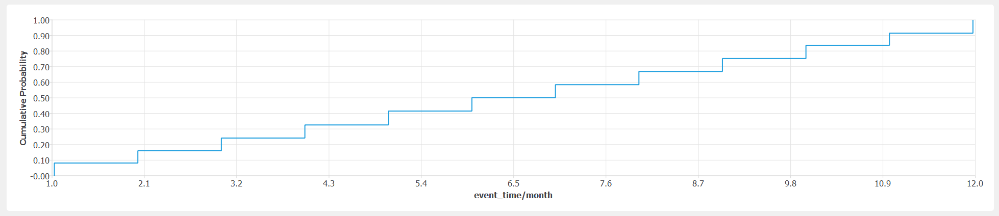
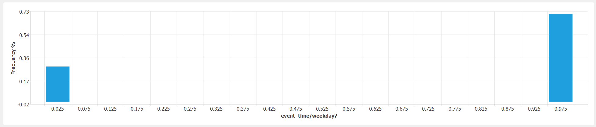
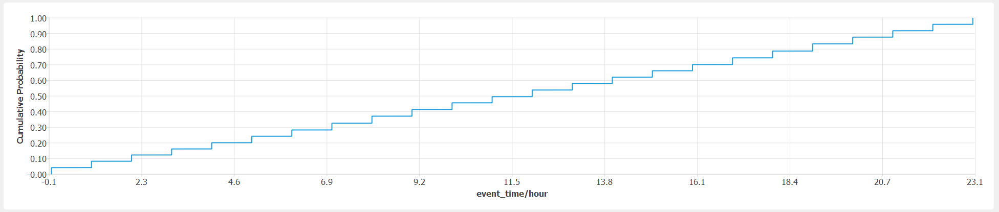
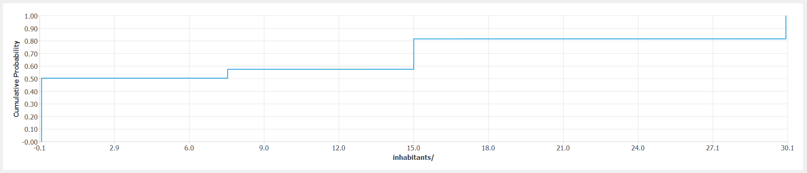
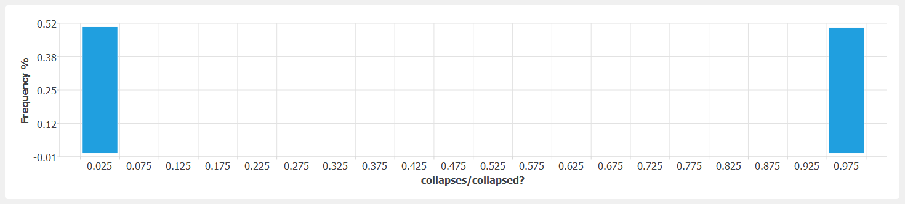
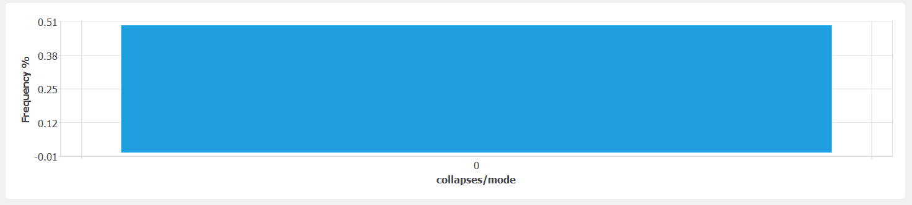
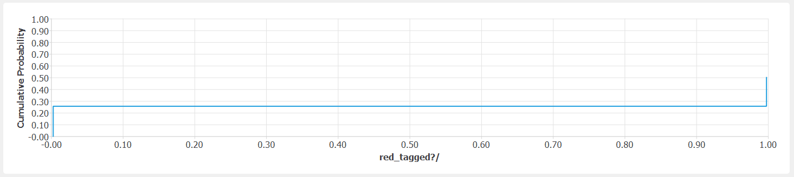
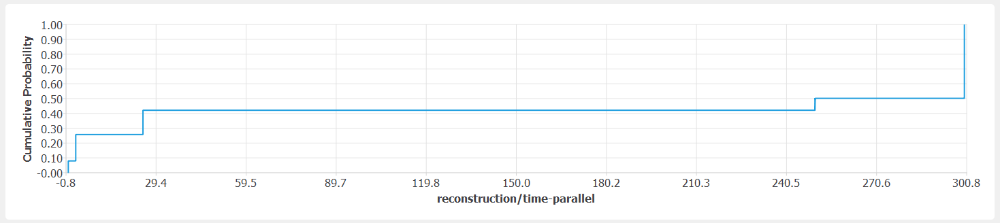
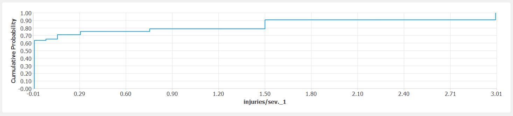
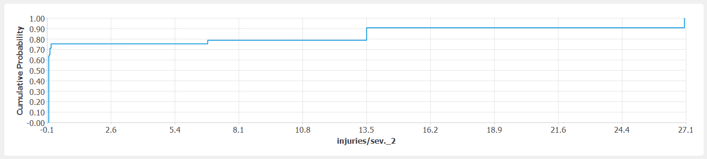

PBE Verification¶
Verification of the structural response simulation part of the workflow are presented in the EE-UQ user manual.
This example was designed to verify that the central tendencies estimated by the PBE App are appropriate. The dispersion of every variable is reduced to a sufficiently low value (i.e., a \(10^{-4}\) coefficient of variation is used) that makes it simple to obtain the decision variables analytically. Verification is performed by comparing analytical solutions to the estimated values. Note: this verification example is identical to the first system test of the pelicun Python library that the PBE App uses for loss estimation.
The files required to run the verification are available in the Verification/01_Central_tendency folder. Most of the input information can be loaded automatically from the test_central_tendency.json file. After loading the file, the following locations need to be set manually:
Input Script under SIM: location of
SDOF.tclFile under EVT/Multiple Existing: location of
Rinaldi.jsonAnalysis Script under FEM: location of
test_analysis_script.tclComponent damage and loss under
DL/General/Custom Data Source: location of the folder that containsT0001.001.xmlPopulation distribution under
DL/General/Custom Data Source: location ofpopulation_test.json
All of the required files shall be available in the Verification/01_Central_tendency folder. After specifying the above locations you should be able to run the performance assessment. The following comparisons are performed to verify the calculation:
The cumulative distribution function (CDF) of
event_time/monthshall show 12 steps that correspond to a uniform distribution of 12 discrete month values shown infig-ver-1-1.Cumulative distribution function of event month.¶
The probability density function (PDF) of
event_time/weekdayshall show two bars with 0.286 / 0.714 likelihoods that correspond to the probability of a day being a weekday or a weekend, respectively shown infig-ver-1-2.Distribution of weekday/weekend realizations.¶
The CDF of
event_time/hourshall show 24 steps that correspond to a uniform distribution of 24 discrete hour values starting at 0 with a maximum of 23 and shown infig-ver-1-3.Cumulative distribution function of event hour.¶
The CDF of inhabitants shall follow the custom temporal distribution prescribed in
population_test.json. That distribution assigns 0, 25%, 50% or 100% of the peak population to the building. The peak population is 10 people. Hence, the CDF of inhabitants shall show steps at 0, 2.5, 5.0 and 10.0. The step heights can be determined from the month, weekday and hour distributions and the temporal change in the number of inhabitants. The following step heights are expected: 14/28 ; 2/28; 7/28; 5/28 and shown infig-ver-1-4.Cumulative distribution function of inhabitants.¶
The ground motion record is scaled so that it results in an EDP that is identical to the collapse limit. The collapse limit is 0.5 g, which is 4.903325 m/s2. Due to the stochastic nature (and the simplicity) of the model, half of the realizations will have a slightly lower EDP value than the collapse limit, while the other half shall have a higher one. This shall lead to a 50% probability of collapse in the results as shown in
fig-ver-1-5.Distribution of collapse/non-collapse realizations.¶
Only one collapse mode is used in this test. The PDF of the collapse mode results shall show that the collapse mode is evaluated in only 50% of the realizations because the others did not lead to collapse as shown in
fig-ver-1-6.Distribution of collapse modes.¶
There is only one type of component in the building and the corresponding Performance Group is not divided further into multiple Component Subgroups (note that there is only one number provided under directions in the DL/Components tab). Consequently, the components within the Performance Group are assumed to have identical and perfectly correlated behavior. When the building is damaged, all the components will be damaged which will trigger a red tag regardless of the actual limit assigned to the red tags. Only the second and third damage states trigger red tags. The probability of exceeding damage state (DS) 2 given the quasi-deterministic EDP value is 50%. Hence, the probability of a red tag triggered shall be 25% (the probability of non-collapse and exceeding DS2). Note that the CDF in
fig-ver-1-7show that red tag information is only available in 50% of the cases because the other realizations led to collapse.Cumulative distribution function of realizations that resulted in a red tag.¶
Irrepairability and impractical repairs due to excessive cost or time are not examined by this test in detail. Similarly to the collapse modes, it can be verified that only 50% of the realizations provide a value for these decision variables and the provided value is 0 in all cases.
The fragility data is specified so that reconstruction costs are one hundred times the reconstruction times. Because there is only one component, there should be no difference between reconstruction times with parallel and sequential work assumptions. This can be verified by plotting the joint distribution of those two variables (
fig-ver-1-8) and the joint distribution of reconstruction cost and time (fig-ver-1-9).The distribution of reconstruction/time-parallel (and the other two, perfectly correlated decision variables) is more difficult to determine analytically than the previous results. The three damage states of the single component in the building have 2.5, 25 and 250 days of repair consequence. The replacement time of the building is 300 days. Therefore, considering the non-zero likelihood of no damage, the steps in the CDF of repair time shall be at the following values: 0, 2.5, 25, 250, and 300 days. The last step corresponds to collapse and has a 50% probability of occurrence. The other steps correspond to the probability of occurrence of each damage state from DS0-4 where 0 is no damage. The fragility of the component is designed to have the following DS exceedance probabilities at the quasi-deterministic EDP value: 0.8413, 0.5000, 0.1586 for DS1-3, respectively. These correspond to the non-collapsed realizations. Consequently, the total probability of being in each damage state will be half of those values given 50% probability of collapse (
fig-ver-1-10).Cumulative distribution function of reconstruction time.¶
Injuries and fatalities either stem from collapse of the building or from exceeding DS2 in the component. Component damage leads to a significantly smaller number of injuries than building collapse. Considering the temporal distribution of the population, the exceedance probabilities of DS2 and DS3, the probability of building collapse and the affected area by collapse and component damage, the following steps are expected on the CDF of injuries (step size shown in parenthesis) (
fig-ver-1-11): 0 (35/56), 0.075 (1/56), 0.15 (3.5/36), 0.25 (2/56), 0.3 (2.5/56), 0.5 (7/56), 1.0 (5/56).Cumulative distribution function of reconstruction time.¶
A similar calculation provides the following steps for the CDF of fatalities (Cref{fig:ver_1_12}): 0 (35/56), 0.025 (1/56), 0.05 (3.5/36), 0.1 (2.5/56), 2.25 (2/56), 4.5 (7/56), 9.0 (5/56)
Cumulative distribution function of fatalities.¶